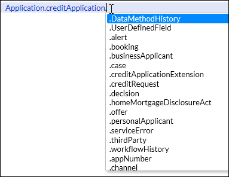

Inserting an Object Model Item
Use the Object Model Browser to find, view, and select object model items when building data methods.
 | Tip Content assist displays the child objects and fields of a data object when you type in the name of the data object followed by a dot. For example, typing
Application.CreditApplication. and pressing
Ctrl + Space displays a drop-down list as shown in the following screenshot.
 Example of the child objects and fields for Application.creditApplication |
- Data fields
- Data methods
- Data objects
- Data object references
To insert an item from the Object Model Browser, follow these steps:
If you selected a data field or data method, it is inserted in the editor at the cursor location. If you selected a data object or a data object reference, a
for loop is inserted with an empty loop body and a context relative to the current active context.
For example, if your data method context is Application.creditApplication, and you selected the Application.creditApplication.personalApplicant object, the following for loop is inserted:
for every Application.creditApplication.personalApplicant relative to creditApplication do endfor
Similarly, if you selected a data object reference named dor_Primary_applicant with the context Application.creditApplication.personalApplicant, the following for loop is inserted:
for every Application.creditApplication.personalApplicant in dor_Primary_applicant do endfor